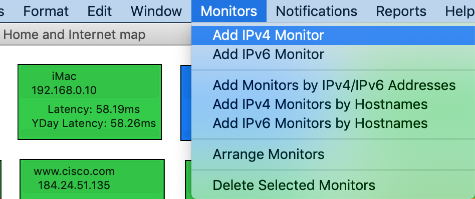
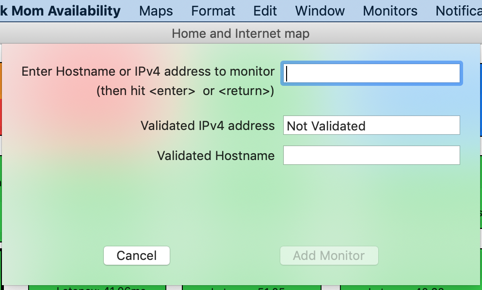

Adding one Monitor to a Map
Select the map you want to add the monitor to.
Select Monitors -> Add IPv4 Monitor or Monitors -> Add IPv6 Monitor. 
Enter the hostname or IP address of the target, and hit return . Network Mom Availability will validate the hostname or IP address and perform DNS resolution. 
Click Add Monitor
(optional) Click and drag the monitor in the map to reposition it.
If you enter a hostname, and the host has multiple IPv4 or multiple IPv6 addresses, Network Mom Availability will pick one address (only) to monitor. This may not be what you want. For hostnames with multiple IP addresses, we recommend using Monitors -> Add Monitors by IPv4/IPv6 addresses to have full control over which IPs you monitor. In general, if you are monitoring a “virtual server” with multiple IP addresses, you will want to monitor them all.
The above rule does not apply to a “typical” host which has one IPv4 and one IPv6 address. In that case, Monitors -> Add IPv4 Monitor will monitor the IPv4 address, and Monitors -> Add IPv6 Monitor will monitor the IPv6 address.
https://networkmom.net feedback@networkmom.net Copyright 2019 Network Mom LLC